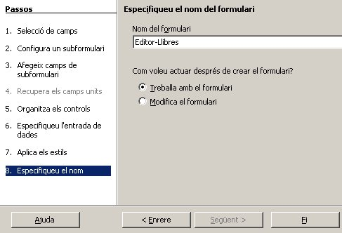
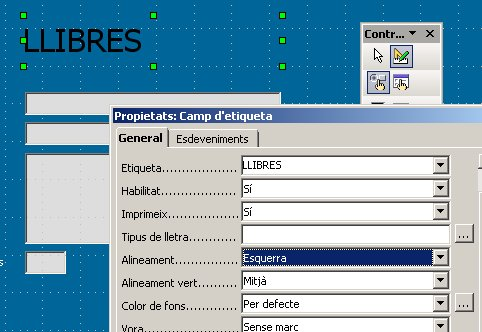

En aquesta pràctica aprofundirem més en la creació dels formularis creant:
Com podeu veure a la següent imatge el Formulari mostra informació d'una específica editorial i a la part inferior un Subformulari mostra els llibres de què disposa la biblioteca d'aquesta específica editorial.
Ara seguiu els passos per aconseguir fer aquest Formulari.
Des de l'apartat de Formularis selecciona l'opció “Crea un formulari utilitzant l'auxiliar…”, selecciona la Taula Editor i el camp nom editor.
Polsa següent i indica, com veus a la imatge que vols afegir un Subformulari que contendrà informació de la taula Llibres. Fes un clic finalment sobre Llibres i polsa Següent.

Selecciona els camps indicats a la imatge que sortiran al subformulari:
Següent. Ara seleccionareu l'organització dels controls del Formulari i del Subformulari.
En el següent polsa Següent directament.
Selecciona l'estil del formulari.
Posa el nom al Formulari i finalitza.

Ara ja pots veure el resultat.
Per veure una altra editorial i els llibres que tenim d'aquesta t'has de moure amb la barra de registres.
(per això haurem d'explicar breument la barra d'eines del disseny)
Per modificar manualment el disseny d'un formulari feu un clic amb
el botó dret sobre el nom del formulari que vulgueu modificar i polseu
Edita.

Ara necessitarem tenir activada la Barra d'eines: Controls del Formulari, en cas de que no estigui ja activada.

La primera cosa que aprendrem a fer és a moure els controls del formulari.
Per això selecciona la fletxa de la barra d'eines i fes un quadre arrossegant sobre el formulari de manera que inclogui tots els controls que volgueu moure. En aquest cas tots. Després feu clic i arrossegueu cap abaix.
Ara aprendrem a inserir una Etiqueta al formulari.
Farem servir l'eina de la barra de d'eines de formularis Camp d'etiqueta “ABC”.
Feu clic sobre aquest control i obriu un espai al formulari on anirà l'etiqueta.
Ara, tenint activada el control Etiqueta polsa sobre l'opció de la barra d'eines Propietats del control. Escriu dintre de la propietat Etiqueta el valor LLIBRES.
També pots modificar el tipus de lletra i la seva mida amb la propietat Font i l'alineació de l'etiqueta dintre de l'espai reservat per ella (Esquerra, Dreta…)…..

Un cop hagueu fet els canvis tanqueu el deseu.
Cal que tingueu en compta que els formularis es configuren en una ediditor de tipus writer (editor de textos) i per tant, podeu apilcar aquí tot el que ja heu aprés sobre format de textos. Intenteu canviar el color del fons o la mida del formulari anant al menú Format i seleccionant Pàgina....
Podeu també, canviar els marges si com és habitual, el formulari no es necessita imprimir. Poseu 0cm en el 4 marges.